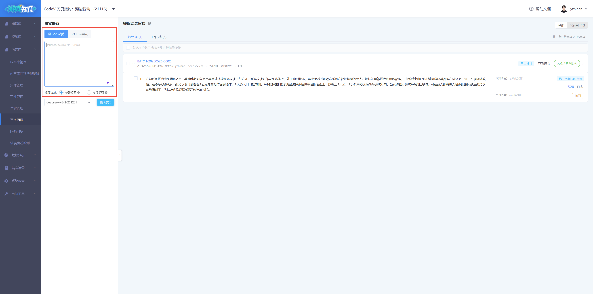
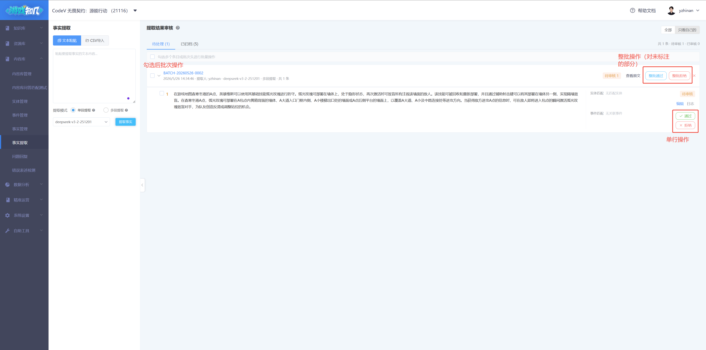
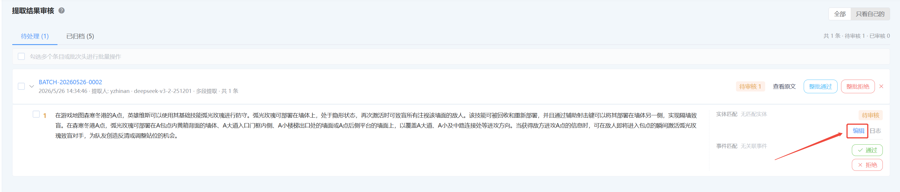
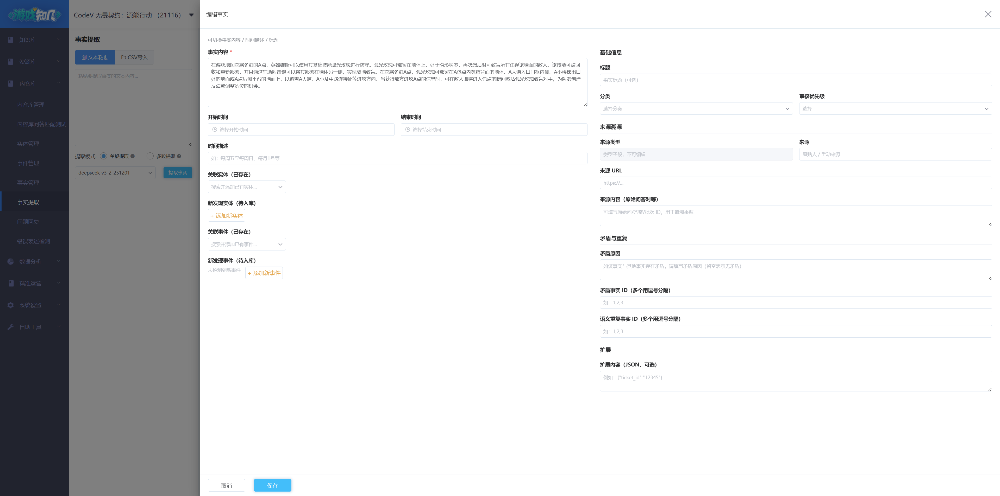
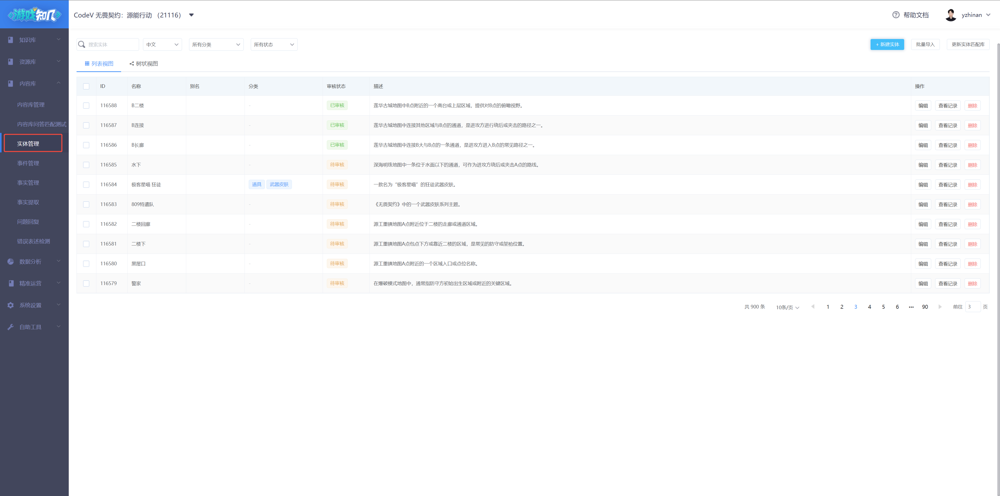

平台使用说明（运营版）
Gbot 事实库管理平台（以下简称"平台"）是面向运营和项目侧的内容生产工具。它把项目方提供的非结构化文档（活动公告、玩法说明、运营笔记等）提取为可被 AI 检索使用的"事实"，并以"实体"（角色/道具/概念）和"事件"（活动/赛事/版本）为锚点组织起来，为游戏 Bot/客服提供可信的回答素材。
| 概念 | 含义 | 例子 |
|---|---|---|
| 实体（Entity） | 游戏中相对稳定的"对象" | 角色"维斯"、皮肤"暗影执行者"、地图"深海明珠" |
| 事件（Event） | 有时间属性的"运营/玩法事件" | "春节活动"、"S23 赛季更新"、"夏日庆典" |
| 事实（Fact） | 一句结构化、可被 Bot 引用的陈述 | "维斯的大招冷却时间为 60 秒" |
左侧导航栏 → "内容管理" → 6 个 Tab：
顶部 游戏切换器 决定当前操作的游戏数据。所有 Tab 都按当前游戏过滤；切换游戏后数据完全独立。
左侧"提取输入区"提供两种方式：

右侧"审核区"按批次组织，每个批次卡片对应一次提取动作。卡片内包含若干候选事实，每条事实可以：

审核区采用默认多选交互：批次头和每条事实左侧都有 checkbox。勾选后顶部出现批量操作栏。
| 操作 | 可勾选粒度 | 规则 |
|---|---|---|
| 批量通过 / 批量拒绝 | 可以勾选子项，也可以勾选批次头 | 只对待审核条目生效；已标注条目自动跳过 |
| 导出 CSV | 必须覆盖完整批次 | 如果只勾选了某个批次的一部分，前端会 toast 提示「只允许导出整个批次的数据」并阻止导出 |
批次头 checkbox 会联动该批次下所有事实；如果只想批量审核部分事实，可以单独勾选子项。但导出 CSV 时必须保证涉及的每个批次都被完整选中。
点行内"编辑"按钮 → 右侧 80% 屏宽抽屉，分为左右两栏：


当批次内全部条目都已标注（无待审核）时，批次卡片会自动出现 [入库 / 归档批次] 按钮：
查看当前游戏下的全部实体，支持：

同实体管理，区别在于事件包含时间属性（开始时间/结束时间/时间描述）。
除了实体/事件管理共有的能力，事实管理还有两个特别能力：
列表新增"同步状态"列，4 态由后端自动维护，不需要手动操作：
| 状态 | 含义 |
|---|---|
| 待上传 | 还没上传过（首次入库后默认值） |
| 待更新 | 已上传过但内容更新过，需要重新同步 |
| 已上传 | 当前已成功同步到 Bot/RAG 检索使用 |
| 上传失败 | 同步过程中失败（后端会自动重试） |
列表顶部固定一行汇总条，方便发现异常：
📊 同步状态：✅ 已上传 1240 ⏳ 待上传 32 🔄 待更新 18 ⚠ 失败 5 [查看失败 →]点击 [查看失败] 自动筛选所有 failed 条目。
首期文件导入仅支持 CSV。其它格式（PDF / Word / Excel）后续版本支持。
| 入口 | 用途 | 是否走 AI 抽取 |
|---|---|---|
| 提取审核工作台 → "📎 文件导入" | 大段文本喂 AI 抽事实 | ✅ 走 |
| 实体/事件/事实管理 → "批量导入" | 已有结构化数据直接入库 | ❌ 不走，按字段原样入库 |
单次上传 ≤ 1000 行，文件大小 ≤ 5MB。超出请分批。
如果批次中部分行因字段错误（如必填字段缺失、ID 不存在等）失败，整体仍然 success，但占位卡片头部会显示 ⚠ N 行异常。点击可看具体哪几行因什么原因失败，可下载"失败行 CSV"修订后重新上传。
列名采用中文，方便填写。多语言列首期不暴露在模板里——需要补多语言时进编辑表单逐条补。
用途：在提取审核工作台上传，AI 会从"知识文本"列抽取出多条事实。
| 列名 | 必填 | 说明 |
|---|---|---|
| 标题 | - | 该批次的标题，可选 |
| 其它上下文 | - | 给 AI 的额外背景信息（如"游戏背景：东方玄幻"），提升抽取准确度 |
| 知识文本 | 必填 | 待抽取的原文（AI 输入主体） |
| 分类ID | - | 抽取出的事实统一归属此分类 |
| 来源类型 | - | 自定义来源类型，如 wiki / manual |
| 来源 | - | 来源 URL 或来源说明 |
| 扩展信息 | - | JSON 字符串（如 {"campaign_id":"SPRING_2026"}），业务方自定义透传 |
标题,其它上下文,知识文本,分类ID,来源类型,来源,扩展信息
张三角色介绍,游戏背景：东方玄幻,张三是修真者…大招冷却 60 秒。,3001,wiki,https://wiki.example.com/zhangsan,
春节活动公告,2026 年 2 月运营活动,春节活动期间…活动时间 2026-02-10 至 2026-02-20。,3002,manual,运营公告,"{""campaign_id"":""SPRING_2026""}"用途：在实体管理 Tab 批量导入；不抽取，按字段直接入库。
| 列名 | 必填 | 说明 |
|---|---|---|
| 实体名称 | 必填 | 中文名称 |
| 标签（多个用英文逗号分隔） | - | 标签 ID，如 1001,1002 |
| 别名（多个用英文逗号分隔） | - | 如 老李,李哥 |
| 简介 | - | 实体的简要描述 |
用途：在事件管理 Tab 批量导入；不抽取。
| 列名 | 必填 | 说明 |
|---|---|---|
| 事件名称 | 必填 | 事件中文名 |
| 标签（多个用英文逗号分隔） | - | 标签 ID |
| 别名（多个用英文逗号分隔） | - | |
| 开始时间 | - | ISO 8601，如 2026-02-10T00:00:00+08:00 |
| 结束时间 | - | 同上，可空 |
| 时间描述 | - | 周期/重复描述，如"持续整个 7 月" |
用途：在事实管理 Tab 批量导入；不抽取。
| 列名 | 必填 | 说明 |
|---|---|---|
| 事实ID | - | 留空由系统分配 |
| 标题 | - | 事实标题，可选 |
| 事实内容 | 必填 | 事实正文，如"维斯的大招冷却 60 秒" |
| 分类ID | - | 所属分类 |
| 来源类型 / 来源 / 来源URL / 来源内容 | - | 来源溯源信息 |
| 开始时间 / 结束时间 / 时间描述 | - | 事实的时效 |
| 关联实体ID（多个用英文逗号分隔） | - | 如 1001,1002 |
| 关联事件ID（多个用英文逗号分隔） | - | |
| 矛盾事实ID（多个用英文逗号分隔） | - | |
| 审核状态（待审核/已审核） | - | 默认"待审核"；可填"已审核"直接通过 |
导出的目标场景：把批次内的事实给外部团队复核 / 标注。导出步骤：
[导出 CSV]重要规则： 导出 = 完整批次内全部条目（含 待审核 / 已审核 / 已拒绝 三态）。系统不支持只导出一个批次里的部分事实。
列名与"事实导入模板"对齐：
| 列分组 | 列名 |
|---|---|
| 基础 | 事实ID / 标题 / 事实内容 / 分类ID |
| 来源 | 来源类型 / 来源 / 来源URL / 来源内容 |
| 时效 | 开始时间 / 结束时间 / 时间描述 |
| 关联 | 关联实体ID / 关联事件ID / 矛盾事实ID |
| 审核信息 | 审核状态（待审核 / 已审核 / 已拒绝） |
多选多个批次导出时，所有事实合并到一份 CSV。不加 batch_id 列（后端处理不需要）。
导出后涉及的批次全部自动归档，进入"已归档"区。归档区可重新导出（不限次数），但不能再修改条目状态。
AI 提取事实时会发现一些目前实体库还没有的实体（如"暗影执行者"），平台会标记为"建议新增"等待审核者决策：
如果不确定，可以先编辑实体卡片修改名称/描述/标签后再保留。
可以。后端处理是异步的，前端只是轮询任务状态。即使关闭页面，处理仍在后端进行；下次打开页面，占位卡片会自动恢复并显示最新状态。
整体仍会成功导入未报错的行；占位卡片头部会显示 ⚠ N 行异常，点击可查看具体哪几行哪些字段错。可下载"失败行 CSV"修订后重新上传。
不需要做任何操作，后端会自动重试。如果长时间停留在 failed 状态（超过半天），请联系开发同学排查。
在审核工作台未入库前，可以点"撤回"恢复为"待审核"。一旦批次入库归档，已拒绝的事实就不能恢复了——但它仍保留在数据库中作为训练资产，没有被物理删除。
首期 CSV 模板不包含多语言列。需要补多语言（英语 / 阿拉伯语 / 土耳其语 / 俄语 / 粤语）时，请进入事实管理逐条点编辑，在抽屉左栏顶部切换语种后填写。
不能。归档后批次卡片切换为只读模式，事实条目只能查看、不能改状态。但可以无限次重新导出。
外部团队在 CSV 文件的"审核状态"列填写最新审核结果（已审核 / 已拒绝 / 待审核）；改完后再上传到事实管理 Tab的"批量导入"，由系统按照"审核状态"列覆盖入库。
支持。顶部游戏切换器决定当前看到的数据。每个游戏的实体/事件/事实完全独立，切换时数据不会混淆。批量导入时不需要在 CSV 模板中指定游戏 ID，系统会自动按当前选中的游戏入库。
会。批次头 checkbox = 自动勾选该批次下所有事实；如果手动取消单个子项，批次头会自动转为"半选"状态。